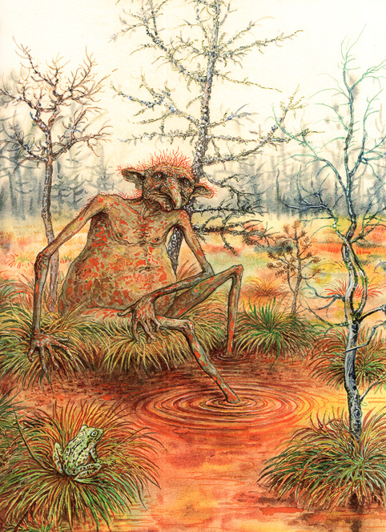
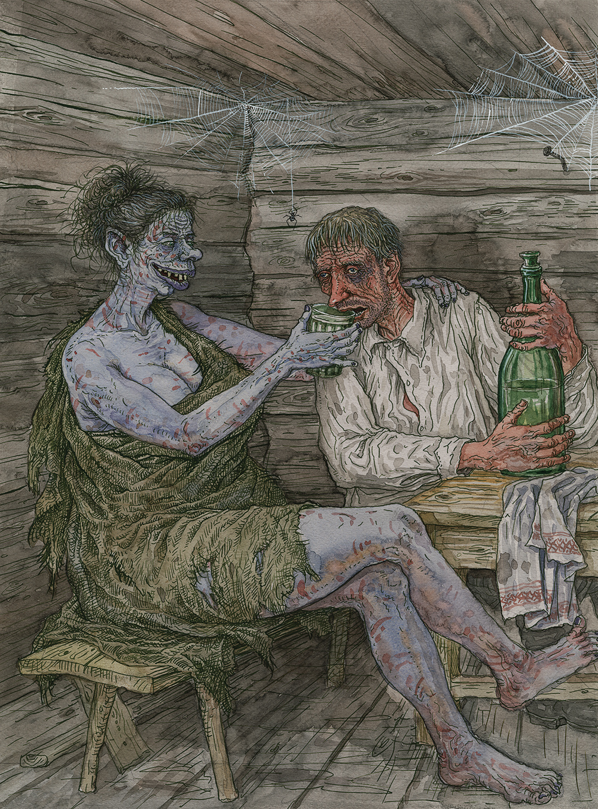

3. Хата, у якой немагчыма пераначаваць
Дабрыдзень! Пакуль Зміцер там даследвае, распавяду вам трошкі пра розных міфічныхістот Беларушчыны. Так як мы толькі што прайшлі праз балоты, распавяду адразу пра Аржавеніка:

Насяляў аржавень — балота з іржавымі плямамі на паверхні ад растворанай у ім жалезнай руды. Нават узімку аржавень не можа схаваць свайго жытла — бура-жоўтыя плямы з-пад снегу і лёду выдаюць знаходжанне. Уяўляўся брудна-рудым, з надзвычайна тоўстым жыватом, з тонкімі, як сцябліна, нагамі, увесь пакрыты іржавымі прыліпамі. Часам здабычай аржавеня можа стаць рэдкая жывёла, якая трапіла ў яго балота, або начны п’яніца, які заблукаў. Аржавенік спакайнейшы за сваіх братоў — багніка і балотніка. Яго не трывожаць людзі, бо глеба на такіх балотах не ўрадлівая, летам аржавень не перасыхае, таму нячысцік жыве бестурботна, абрастае ліпучымі слаямі, падтрымлівае каламуць у аржавені.

Таксама кажуць, што беларусы шмат п’юць, мабыць і так, але ёсць такая міфалагічная прычыны, чаму: у нас ё істота, якая прымушае нас піць. Гэта дух, які змушае чалавека валацужнічаць, гоніць з наседжанага мейсца. Бадзюля туляецца каля дарог. Бліжэй да зімы ўвязваецца сьледам за чалавекам, у хаце якога і пасяляецца. З гэтага часу там назіраюцца ўсялякія прыкрасьці: чалавек пачынае піць, пускаючы на вецер свой набытак. Бадзюля чакае, калі той усё растрасе і пойдзе па сьвеце. Каб прагнаць Бадзюлю, трэба чыста вымесьці і вымыць у хаце, і бруд выліць наводлег на заход сонца. Тады, кажуць, можна ўбачыць, як Бадзюля уцякае, зь перапуду забываючы схаваць сваё аблічча. Мае выгляд немаладой жанчыны зь вялікімі па брух грудзьмі. На ёй няма ніякага адзеньня, толькі брудная падраная посьцілка, якая амаль не прыкрывае парэпанага струплівага цела. Твар у яе непрыгожы: пукатыя вочы, кароткі шырокі нос, тоўстыя адвіслыя вусны, валасы, зьбітыя ў каўтун. Пэрсанаж згадваецца ў Мядзельскім раёне.
Наступны: 4. Гісторыі на сайце Беларускага філіялу
Ацэнка: 7.5/10
Філіял: Беларускі
Аўтар: Хведар Звычайны